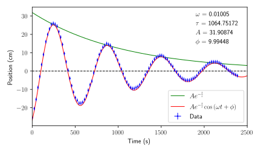
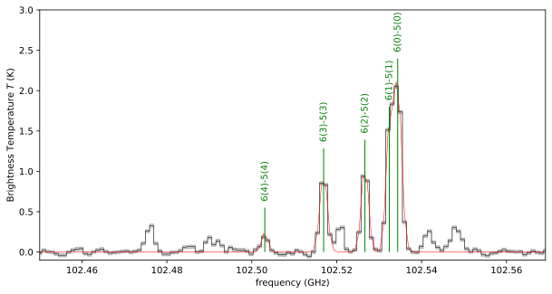
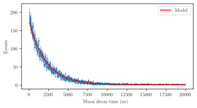
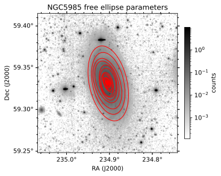
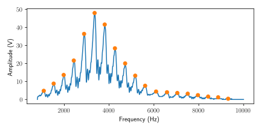

Parker Wise
About
Projects
Outreach
Resume
Blog
Source Identifications in a Molecular Cloud

Determining Newton's Gravitational Constant

Identifying Chemicals Using Gaussian Fitting

Determining Muon Lifetime

Fitting Brightness Contours to a Galaxy

Experimentally Calculating the Speed of Sound
Source Identifications in a Molecular Cloud
Determining Newton's Gravitational Constant
Identifying Chemicals Using Gaussian Fitting
Determining Muon Lifetime
Fitting Brightness Contours to a Galaxy
Experimentally Calculating the Speed of Sound